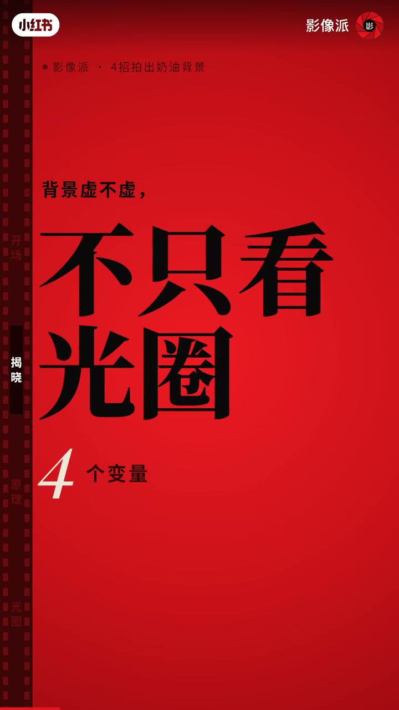
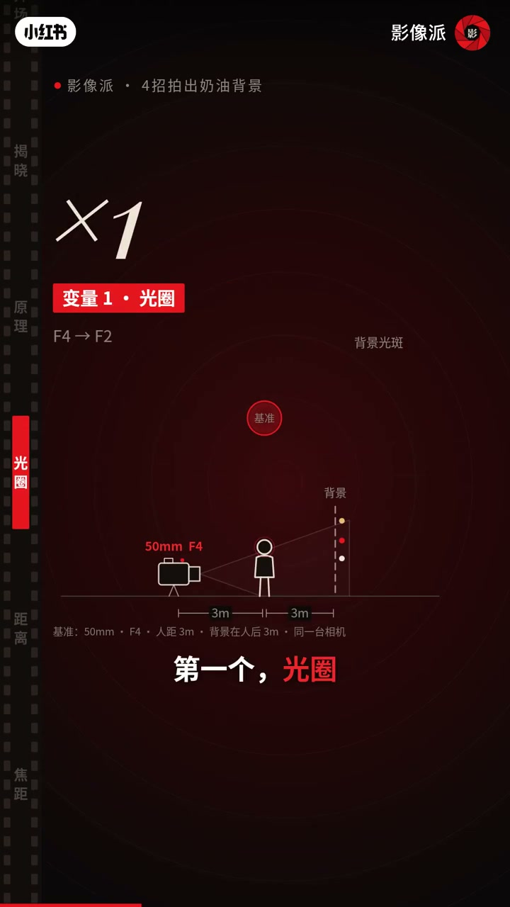
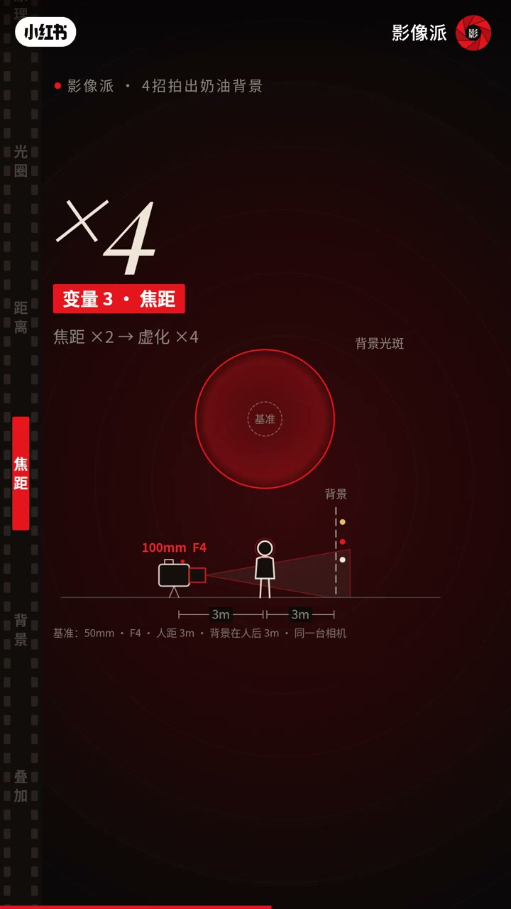

内容要点
「影像派」反驳「没钱买大光圈就没虚化」：在同一基准（如 50mm·F4·人距3m·背景后3m）上依次开大光圈、靠近主体、拉长焦距、推远背景；口诀「开大、靠近、拉长、推远」。示例称 1m+55mm+背景20m 外可胜过贴墙 F1.8。中段口播有缺失，变量以画面公式为准。
知识结构
[00:00→00:30]
立题
没钱买大光圈≠没奶油背景；先讲光斑原理。
[00:30→01:12]
四变量
光圈 F4→F2；人距缩短；焦距×2虚化约×4；背景 3m→30m。
[01:12→01:19]
口诀
开大、靠近、拉长、推远。
总结
虚化是四个旋钮的乘积：光圈、物距、焦距、背景距离——大光圈只是其中一个，不是唯一门票。
00:00-00:42原理与变量1–2：光斑、开大、靠近
片头嘲讽「没钱买大光圈就拍不出背景虚化」。原理页：背景每个光点在焦外变成光斑。变量1 光圈：基准 50mm F4、人距3m、背景后3m，开到 F2 光斑变大。变量2 距离：人距从约3m 收到约1.5m，同样放大虚化。

[00:12] 原理图：背景光点在焦外成光斑
Diagram: background light points become bokeh discs out of focus

[00:22] 变量1光圈：F4→F2 基准示意图
Variable 1—aperture: F4→F2 baseline diagram
00:42-01:19变量3–4与口诀：拉长、推远
变量3 焦距：50→100mm（×2）时虚化约×4。变量4 背景距离：人后 3m→30m，光斑继续长大。综合示例：靠近拉到55mm、背景推到20m外，可赢过贴墙1m的 F1.8。
一句口诀：开大、靠近、拉长、推远。脚注：00:30 附近 ASR 残缺，四变量数值以画面标注为准。

[00:42] 变量3焦距×2→虚化约×4
Variable 3: focal length ×2 → blur roughly ×4
[01:14] 口诀：开大、靠近、拉长、推远
Mnemonic: open up, move closer, go longer, push the background farther
完整转录（12段）
以下文本由 Whisper medium 模型自动转录，可能存在少量识别误差，已尽可能修正。
没钱买大光圈就拍不出背景虚化
1米缩到
1米靠近拉到55毫米
退后一点让人一样大
再把背景推到20米外
就赢了离墙1米拍的F1.8
所以没有大光圈也能拍出哪个背景
一句话
开大
靠近
拉长
推远